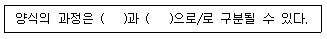

수산양식기사 (2020-08-22 기출문제)
1과목: 어류양식학
1. 어류 양식 시 사료 섭취량에 관한 설명 중 틀린 것은?
- 용존 이산화탄소 농도가 높아지면 증가한다.
- 일반적으로 수온이 높을수록 증가한다.
- 용존 산소량이 감소하면 포식량도 감소한다.
- 체중이 증가하면 단위체중당 사료 섭취량은 감소한다.
(정답률: 72%)

2. 식물성 먹이 생물을 배양하기 위하여 고려되는 3가지 측면 중 기술적 측면에 속하지 않는 것은?
- 먹이 생물의 단일 종 분리 및 순수 배양
- 배지의 영양강화
- 용기의 선택과 세척
- 멸균과 교반
(정답률: 77%)
3. 잉어 치어를 물벼룩이 발생된 못에 옮겨서 본격적인 성장을 시키고 싶다. 1m2당 몇 마리를 방양하면 치어 성장이나 경제적인 면에서 타당성이 있는가?
- 1m2당 10 ~ 20마리
- 1m2당 20 ~ 90마리
- 1m2당 100 ~ 200마리
- 1m2당 400 ~ 700마리
(정답률: 70%)
4. 넙치 수정란 채란에 가장 널리 사용되는 방법은?
- 천연어미로부터 인공채란하는 방법
- 천연어미로부터 호르몬 주사에 의해 인공채란하는 방법
- 양성어미로부터 자연산란에 의한 방법
- 양성어미로부터 호르몬주사 후 자연산란에 의한 방법.
(정답률: 70%)
5. 해상가두리에서 4 ~5cm 크기의 조피볼락 종묘의 사육시 가두리 표면적당 일반적인 적정 사육밀도는?
- m2당 약 100 ~ 500마리
- m2당 약 700 ~ 1000마리
- m2당 약 1000 ~ 2000마리
- m2당 약 2000 ~ 3000마리
(정답률: 56%)
6. 어류 먹이 생물의 조건으로 틀린 것은?
- 유생의 입의 크기에 적당해야 한다.
- 대량배양이 용이해야 한다.
- 영양가가 있는 것이어야 한다.
- 운동성이 빨라야 한다.
(정답률: 93%)
7. 양식 어류 사료 내 탄수화물에 대한 설명으로 거리가 먼 것은?
- 육식성 어류의 경우 알파(α)화된 전분의 소화흡수량이 초식성보다 높다.
- 에너지원으로 이용된다.
- 점착제로서의 역할도 한다.
- 소화 흡수된 여분의 탄수화물은 지방으로 변성되어 체내에 저장된다.
(정답률: 72%)
8. 다음 중 위가 없는 어류는?
- 무지개 송어
- 뱀장어
- 메기
- 잉어
(정답률: 81%)
9. 다음 ( ) 안에 적합한 용어는?

- 어미생산 – 양성
- 어미생산 – 방류
- 종묘생산 – 방류
- 종묘생산 – 양성
(정답률: 82%)
10. 식물성 plankton이 많이 발생하는 못에 양식하기 적합하지 않은 어종은?
- 무지개 송어
- 잉어
- 백련
- 뱀장어
(정답률: 58%)
11. 넙치 치어 20000마리 (마리당 3g)를 구입하여 14개월간 양성하면서 까나리 등의 생사료를 80톤 공급하여 성어 20톤을 생산하였을 경우 사료효율은?
- 약 15%
- 약 20%
- 약 25%
- 약 30%
(정답률: 68%)
12. 뱀장어 양식 시 실지렁이를 먹이로 공급하는 시기는?
- 렙노세팔루스
- 실뱀장어
- 검둥뱀장어
- 새끼뱀장어
(정답률: 72%)
13. 숭어의 생태에 대한 설명으로 옳은 것은?
- 가을철 강에서 산란하고 바다로 내려간다.
- 하천에서 부화한 치어는 플랑크톤이나 미세한 생물체를 먹고 산다.
- 친어는 외해에서 산란한다.
- 바다에서 부화한 치어는 2년이 지나야 강으로 올라온다.
(정답률: 54%)
14. 참돔 종묘생산 시 치어의 먹이로 적합하지 않은 것은?
- 로티퍼
- 코페포다 유생
- 성게 유생
- 클로렐라
(정답률: 80%)
15. 은어를 사육하기 위해 사각형 못을 만들려고 할 때 유의할 점으로 거리가 가장 먼 것은?
- 바닥의 경사를 1/100 이하로 한다.
- 배수부에는 집수부를 만들어 배수 포획할 수 있게 한다.
- 대량의 주·배수가 쉽게 될 수 있도록 배수구를 크게 만든다.
- 못의 모서리는 둥글게 하여 물과 함께 찌꺼기가 정체하는 곳이 없도록 해야 한다.
(정답률: 64%)
16. 무지개송어 친어 사육 시 먹이의 양에 대한 설명이 옳은 것은? 단, 일반적으로 큰 식용어의 섭취량 기준임)
- 산란 후 1개월부터 다음 산란 전 2개월까지는 30%
- 산란 전 2개월에서 산란기까지는 50%
- 산란 기간 중에는 70%
- 산란을 촉진하기 위해서 산란 2~3일전부터는 100%
(정답률: 75%)
17. 해수양식을 위해 체중 100g 정도 되는 은연어를 해수에 순치시킨다면 가장 적당한 순치기간은?
- 1일간
- 3일간
- 7일간
- 10일간
(정답률: 50%)
18. 숙성이가 생기는 원인이 아닌 것은?
- 사료량의 부족
- 수온의 이상 상승
- 사료의 부적당한 크기
- 사료 공급 방법의 미숙
(정답률: 66%)
19. 조피볼락의 자어에서 추광성을 나타내기 시작하는 시기는?
- 출산 직후
- 출산 1주 후
- 출산 2주 후
- 출산 3주 후
(정답률: 71%)
20. 잉어의 대형 종묘생산은 3~4cm 정도 되는 소형 종묘를 어느 정도의 크기로 키우는 과정인가?
- 5 ~ 10cm
- 10 ~ 15cm
- 15 ~ 20cm
- 25 ~ 30cm
(정답률: 59%)
2과목: 무척추동물양식학
21. 멍게(우렁쉥이)의 산란과 발생과정에 대한 설명으로 틀린 것은?
- 겨울철에 산란한다.
- 수정란은 수중에 부유한다.
- 알은 하루 지나면 올챙이형 유생이 된다.
- 올챙이형 유생은 물체에 부착한 다음 꼬리부분은 몸체에 흡수된다.
(정답률: 50%)
22. 십완류에 속하는 종은?
- 참문어
- 꼴뚜기
- 주꾸미
- 낙지
(정답률: 62%)
23. 양식생물과 유생기의 이름이 잘못 짝지어진 것은?
- 보리새우 – 미시스 유생
- 멍게(우렁쉥이) - tadpole 유생
- 가리비 – D상 유생
- 참굴 – 노우플리우스 유생
(정답률: 71%)
24. 피조개의 실내채묘를 위한 산란유발 자극으로 거리가 먼 것은?
- 온도 자극
- 전기 자극
- 생식소 첨가
- 간출 자극
(정답률: 64%)
25. 단련종굴의 장점이 아닌 것은?
- 탈락이 적다.
- 크기가 작아서 취급이 쉽다.
- 저항력이 강해 폐사율이 낮다.
- 성장이 억제되어 양성기간이 길어진다.
(정답률: 77%)
26. 생물의 식성에 관한 설명으로 틀린 것은?
- 바지락의 부유 유생은 Chlorella 등의 식물플랑크톤을 먹는다.
- 전복류는 저서생활 초기에는 다시마 등의 갈조류를 주로 먹는다.
- 게류는 부화한 다음 조에아(zoea)기부터 먹이를 먹기 시작한다.
- 성게류의 부화 유생은 미소한 규조류를 먹는다.
(정답률: 58%)
27. 가리비 양성장 선정에 있어서 지표종으로만 짝지어진 것은?
- 갯지렁이 – 염통성게 – 미더덕
- 사미류(거미불가사리류) - 보라성게 – 따개비류
- 미더덕 – 붕넙치류 – 별불가사리
- 연잎성게 – 갯지렁이 - 둑중개류
(정답률: 71%)
28. 우럭(패류) 종묘의 방양에 관한 설명으로 틀린 것은?
- 종묘는 1년 정도 된 각장 양 20mm 내외인 것이 알맞다.
- 한 개체씩 구멍을 만들어 간석지에 심어준다.
- 밀도는 m2당 200 ~ 250개체 정도가 알맞다.
- 방양 시기는 4 ~ 5월이 가장 좋다.
(정답률: 47%)
29. 굴 양식장 노화현상으로 인해 저질에서 발생하는 대표적인 유독물질은?
- NH3
- CH4
- H2S
- CO2
(정답률: 73%)
30. 피조개 양성장으로 적합하지 않는 곳은?
- 자연산 모패가 많이 서식하고 있는 곳
- 저질은 니질로서 해조류가 많이 번식하고 있는 곳
- 수온변동이 적고 수심 3 ~ 20m 정도 되는 곳
- 해적 생물의 피해가 적은 곳
(정답률: 68%)
31. 이동이 심한 조개류의 양성시설로 적합한 방식근?
- 제방식
- 그물가두리식
- 조위망식
- 나뭇가지식
(정답률: 67%)
32. 종묘 방양에 대한 설명으로 가장 거리가 먼 것은?
- 양성계획에 따라 알맞은 방양시기와 양을 결정해야 한다.
- 종묘의 방양은 수온이 상승할 때가 좋다.
- 방양량은 양성법 및 양성장의 환경조건을 따른다.
- 부착성 동물은 유영 동물에 비해 방양밀도가 낮다.
(정답률: 68%)
33. 닭새우 phyllosoma기의 적당한 먹이가 아닌 것은?
- 미소 Zooplankton
- 알테미아의 부화유생
- Copepoda
- Pavlova lutheri
(정답률: 64%)
34. 해삼의 하면기 소화관 발달 상태를 가장 옳게 나타낸 것은?
- 회복
- 쇠퇴
- 발달
- 정체
(정답률: 60%)
35. 진주조개의 패각청소에 대한 설명으로 틀린 것은?
- 수술패의 성장이나 폐사 방지를 위해 필요하다.
- 굴 및 따개비류의 제거가 효과적이다.
- 수온 15℃ 이상의 온도에서 2회 이상 해주는 것이 적당하다.
- 진주의 성장에는 좋지 않은 영향을 준다.
(정답률: 81%)
36. 우럭(패류)의 종묘생산에서 양성까지의 설명으로 적절하지 않은 것은?
- 채묘는 완류식 시설로서 채묘하는 것이 효과적이다.
- 치패 관리는 항상 해수 중에 잠기는 얕은 곳이 좋다.
- 양성장은 저질이 공기 중에 노출이 되지 않는 곳이 적합하다.
- 식해동물의 피해는 그물을 덮어주면 효과를 볼 수 있다.
(정답률: 39%)
37. 전복의 해적생물이 아닌 것은?
- 수랑
- 농어
- 문어
- 민꽃게
(정답률: 59%)
38. 방양 시 종묘를 한 개체씩 바닥의 저질에 모심기 하듯이 심어야 하는 조개는?
- 대합
- 새조개
- 키조개
- 큰이랑피조개
(정답률: 76%)
39. 대하 종묘 생산 시 먹이를 처음으로 먹기 시작하는 유생시기는?
- Nauplius stage
- Zoea stage
- Mysis stage
- Post larva stage
(정답률: 67%)
40. 최적 수온 하에서 해삼유생의 부유유영 기간으로 가장 알맞은 것은?
- 1주
- 2주
- 3주
- 4주
(정답률: 60%)
3과목: 해조류양식학
41. 다음 홍조류 중 염분농도가 다소 낮은 곳에서도 생육하는 종류는?
- 도박
- 우뭇가사리
- 풀가사리
- 꼬시래기
(정답률: 53%)
42. 감태의 생태에 대한 설명으로 틀린 것은?
- 가을 ~ 겨울에 포자엽에서 유주자가 방출된다.
- 봄부터 어린 엽체가 출현한다.
- 2 ~ 6월이 주 생장시기이다.
- 다년생이다.
(정답률: 36%)
43. 우뭇가사리와 관련이 없는 것은?
- 사분포자
- 과포자
- 중성포자
- 포복지
(정답률: 55%)
44. 양식법이 주로 영양번식에 의존하는 종류는?
- 미역
- 다시마
- 김
- 톳
(정답률: 69%)
45. 모자반의 암, 수 배우자가 형성되는 기관은?
- 자낭반
- 포자엽
- 포낭
- 생식기집
(정답률: 58%)
46. 김양성 시 김발의 관리에 관한 내용으로 틀린 것은?
- 김의 생장을 촉진시키기 위해서는 무노출 상태로 두는 것이 좋다.
- 김발의 노출은 김의 활력을 감소시켜 색택이 저하된다.
- 조류의 소통이 빠른 대조 때에는 생장을 돕기 위하여 김발을 낮게 관리한다.
- 채취 2, 3일 전부터 김발을 높여 색택과 광택을 좋게 한다.
(정답률: 61%)
47. 다음 중 김양식장의 환경조건으로 가장 좋은 조건은?
- 유속 10cm/sec 이상, 풍파가 적은 곳
- 유속 10cm/sec 이상, 풍파가 센 곳, 왕복류
- 유속 20cm/sec 이상, 풍파가 적은 곳, 와류
- 유속 20cm/sec 이상, 풍파가 센 곳, 정향류
(정답률: 62%)
48. 덮발에 의한 씨발의 관리 과정에서 김싹이 1mm 정도 자랐을 때 갑자기 투명도가 높고 해파리가 많이 나타났다면, 이때의 가장 효과적인 대책은?
- 고노출선으로 옮긴다.
- 단기 냉장을 한다.
- 뜬흔림발로 전개한다.
- 저노출선으로 옮긴다.
(정답률: 55%)
49. 김발 관리가 바르게 된 것은?
- 종말기에는 노출을 적게 한다.
- 10℃ 이하에서는 노출을 적게 한다.
- 채취한 뒤에는 발을 높인다.
- 김 채취 2 ~ 3일 전에는 발을 낮춘다.
(정답률: 39%)
50. 다음 중 김발 냉장 시 최상의 씨발을 얻을 수 있는 조건은?
- 싹부착이 1cm 당 300개 이상으로서 30 ~ 50mm 크기인 것
- 싹부착이 1cm 당 300개 이상으로서 5 ~ 10mm 크기인 것
- 싹부착이 1cm 당 300개 이하으로서 30 ~ 50mm 크기인 것
- 싹부착이 1cm 당 300개 이하으로서 5 ~ 10mm 크기인 것
(정답률: 50%)
51. 미역종묘의 월하 배양 관리 시 적정 조도는? (단, 수온 25℃ 정도를 기준으로 한다.)
- 암흑처리
- 200 ~ 500 lx
- 1000 lx 전후
- 2000 lx 전후
(정답률: 55%)
52. 다시마를 저수온기에 최대한 활용하여 단기간에 생장시키는 양식방법은?
- 2년 양식
- 촉성양식
- 억제배양양식
- 억제양식
(정답률: 80%)
53. 방사무늬김의 세대 교번에 있어서 감수분열이 일어나는 시기는?
- 엽체에서 조과기를 만들 때
- 조과기가 수정할 때
- 과포자가 사상체로 발아할 때
- 각포자낭에서 각포자가 생길 때
(정답률: 49%)
54. 배양장에서 김 사상체의 각포자는 하루 중 언제 가장 많이 방출되는가
- 3 ~ 4시
- 6 ~ 8시
- 12 ~ 13시
- 18 ~ 20시
(정답률: 49%)
55. 참김, 큰참김, 방사무늬김, 모무늬돌김, 긴잎돌김을 같은 어장에서 양식할 때 자리바꿈으로 가장 많이 혼입하는 종은?
- 참김 또는 큰참김
- 방사무늬 김
- 모무늬돌김
- 긴잎돌김
(정답률: 77%)
56. 미역 유주자의 착생에 대한 설명으로 틀린 것은?
- 수온 20℃ 이하, 비중 1.020 이상일 때 착생률이 높다.
- 수온 25℃ 이상, 비중 1.010 이하에서는 착생률이 매우 낮다.
- 주광성이 있어서 밝은 곳으로 모여든다.
- pH 7.4 ~ 8.0일 때 착생률이 높다.
(정답률: 65%)
57. 해조류의 생장방식과 종들이 바르게 짝지어진 것은?
- 확산생장 – 우뭇가사리, 지누아리
- 개재생장 – 끈말, 진두발
- 정단생장 – 갈파래, 김
- 비대생장 – 다시마, 감태
(정답률: 63%)
58. 다시마 종묘를 촉성배양법으로 배양하면 유주자 착생 후 어느 정도에 아포체가 나타나는가?
- 1주일 후
- 10일 후
- 40일 후
- 60일 후
(정답률: 55%)
59. 미역 유주자에 대한 내용으로 틀린 것은?
- 유주자는 발아하여 현미경적인 작은 배우체로 되어 여름을 지낸다.
- 2개의 편모로 헤엄친다.
- 서양배의 형태(pyriform)이다.
- 성상(星狀)색소체를 가진다.
(정답률: 50%)
60. 무기질(Free-living)김 사상체 배양의 특성으로 틀린 것은?
- 선발육종(選拔育種)을 간단하게 할 수 있다.
- 배양을 위한 넓은 장소가 필요하지 않다.
- 과포자는 매년 구하여야 하나 채묘시기를 쉽게 조절할 수 있다.
- 병의 침범이 적고 배양 관리가 쉽고 경제적이다.
(정답률: 67%)
4과목: 양식장환경
61. 환경조건이 동일한 상태에서 양식장을 같은 규모로 신설한 경우 어장노화를 가장 빨리 초래할 서으로 생각되는 양식방법은?
- 조피볼락의 가두리양식
- 김의 뜬흘림발양식
- 우렁쉥이 밧줄수하식 양식
- 피조개 바닥양식
(정답률: 70%)
62. 개방적 양식장에 속하지 않는 것은?
- 수조식 양식장
- 나뭇가지식 양식장
- 바닥식 양식장
- 수하식 양식장
(정답률: 74%)
63. 기기 자체의 무게에 의해서 해저면을 일정한 거리로 끌어서 시료를 채취하는 채니 방법은?
- 그래브식
- 드레지식
- 코어식
- 아지드식
(정답률: 74%)
64. 수질 측정방법의 연결이 틀린 것은?
- 용존산소 – 윙클러법
- 암모니아성질소 – 인도페놀법
- 염분도 – 질산은적정법
- 수소이온농도 – 격막전극법
(정답률: 57%)
65. 적조가 일어나는 여러 원인 중 가장 중요하게 영향을 미치는 것은?
- 고수온
- 용존산소
- 부영양화
- 외양수와 내만수의 혼합
(정답률: 73%)
66. 오존을 이용한 해산어 양식장 사육수 살균 시 독성을 나타낼 수 있는 용존 물질은?
- 요오드
- 질소
- 탄소
- 카드뮴
(정답률: 59%)
67. 어류의 암모니아 독성에 관한 설명으로 옳지 않은 것은?
- 담수에서보다 해수에서 독성이 강하게 나타난다.
- 용존산소량이 증가할 때 독성이 감소한다.
- 어류는 주로 항문을 통해서만 암모니아를 배설한다.
- 종에 따른 선택적인 영향을 나타내지 않고 모든 어종에 영향을 끼친다.
(정답률: 67%)
68. 생물학적 여과에 대한 설명으로 틀린 것은?
- 생물학적 여과의 주 목적은 물속에 녹아있는 암모니아를 제거하기 위함이다.
- 질산화과정에 관여하는 세균은 호기성 세균이다.
- 여과기능이 잘 일어나기 위해서는 충분한 산소가 보급되어야 한다.
- 생물여과조는 옥외에 햇볕이 잘 드는 곳에 설치하여야 한다.
(정답률: 69%)
69. 공기 양수기의 양수능력이 가장 좋을 때는 언제인가?
- 수면에 배출구가 닿았을 때
- 기포주입 장치가 모두 물속에 있을 때
- 기포 주입구가 수면에 닿았을 때
- 김 로드를 연결하여 사용하였을 때
(정답률: 49%)
70. 다음 중 양식장 수질 오염 시 직접적인 조사 대상 항목과 가장 거리가 먼 것은?
- BOD
- DO
- 암모니아
- 나트륨
(정답률: 75%)
71. 수중의 용존산소량에 영향을 가장 많이 미치는 요인은?
- 기압
- 수온
- 부유물질
- 수소이온농도
(정답률: 65%)
72. 양식장에 석회를 살포하면 유해 생물을 구제하는 효과가 있다고 한다. 석회의 이러한 주 역하레 대한 설명이 옳은 것은?
- 공기 중의 산소의 용해
- 이산화탄소 제거에 의한 pH 상승
- 중금속 이온의 수산화물 생성
- 유화물의 불용성 증가
(정답률: 59%)
73. 양식장에서 볼 수 있는 황화수소의 작용에 대한 설명으로 가장 옳은 것은?
- 환수량이 많은 유수식양식장 사육조에서 발생한다.
- 물의 유통이 잘되는 장소에서 발생한다.
- 산소의 공급량이 증가하면 황화수소의 축적량도 늘어난다.
- 축적되면 저질의 색깔이 검어지면서 악취가 발생한다.
(정답률: 80%)
74. 순환여과양식장 사육내 용존유기물(DOM, dissolved organic matter)에 대한 설명으로 거리가 먼 것은?
- 거품(포말) 분리법으로 제거할 수 있다.
- 주로 마이크로스크린 여과로 제거한다.
- 수질의 산성화와 연관이 있다.
- 자외선 흡광도 측정으로 농도를 검측할 수 있다.
(정답률: 46%)
75. 순환여과식 사육지에서 사육수의 정화처리 순서로 가장 좋은 것은?
- 여과 → 침전 → 소독
- 침전 → 소독 → 여과
- 침전 → 여과 → 소독
- 소독 → 침전 → 여과
(정답률: 75%)
76. 수중의 이산화탄소에 관한 설명으로 옳은 것은?
- 수중의 경도가 높으면 수질이 불안정하다.
- 물속의 이산화탄소는 용존산소와 서로 비례적인 입장에 있다.
- 물속에서 그 농도가 높아도 어류의 산소운반능력에는 영향이 없다.
- 수중의 경도가 낮으면 물속의 이산화탄소는 탄산으로 되어 물을 산성화시킨다.
(정답률: 57%)
77. 은어 사육을 위하여 콘크리트 사각형 사육지를 만들려고 할 때의 주의사항 중 적합하지 않은 것은?
- 바닥은 1/50 ~ 1/20의 경사를 만든다.
- 대량의 주·배수가 쉽게 될 수 있도록 주·배수구를 크게 만든다.
- 물을 회전시키기 위해서는 주수하는 물이 벽에 부딪치도록 하고 배수구는 못의 중앙에 설치한다.
- 배수부에는 집수부를 만들어 배수포획을 할 때 집어할 수 있게 한다.
(정답률: 57%)
78. 다음중 어류 부화장이나 배양장에서 많은 용량의 유입수를 처리하는 데 이용되는 물리적 여과장치로 가장 적합한 것은?
- 살수여과장치
- 침수여과장치
- 거품분리제거장치
- 고속모래여과장치
(정답률: 69%)
79. 침투수를 집수하는 경우 집수관 내부의 평균유속은 초당 어느 정도를 유지하는가?
- 100cm 이하
- 200cm
- 300cm
- 500cm 이상
(정답률: 49%)
80. 담수에서 중요시 되지 않는 영양염류는?
- 질소
- 인
- 규소
- 칼륨
(정답률: 49%)
5과목: 수산질병학
81. 잉어의 봄 Virus(SVC)병이 발생하는 수온은?
- 30℃ 이상
- 24 ~ 29℃℃
- 13 ~ 20℃
- 10℃ 이하
(정답률: 55%)
82. 뱀장어 에드워드병의 주 증상은?
- 안구가 돌출된다.
- 배 부분과 지느러미가 붉어지고, 항문이 종창되며 농이 나오고, 복부에 구멍이 생긴다.
- 피부의 퇴색, 아가미 뚜껑의 출혈, 지느러미 탈락과 체표에 피와 고름을 함유한 팽윤환부가 형성된다.
- 점액의 과다 분비로 두부, 등, 꼬리지느러미에 두터운 점액막이 생긴다.
(정답률: 56%)
83. 금붕어에 궤양병을 일으키는 원인 세균이 아닌 것은?
- Aeromonas hydrophila
- Aeromonas salmonicida
- Renibacterium salmonicida
- Flavobacterium columnare
(정답률: 51%)
84. 원충류의 내외부 구조를 관찰하는데 일반적으로 사용되는 방법이 아닌 것은?
- 김자염색법
- 도은염색법
- 트리판블루염색법
- 고모리트리크롬염색법
(정답률: 47%)
85. Nocardia 증의 주 증상은?
- 출혈
- 내장기관의 염증
- 지느러미의 부식
- 피부 및 내장의 작은 결절
(정답률: 66%)
86. 채란용 어미고기를 죽이지 않고 체내 병원 미생물의 감염 유무를 확인하려고 할 때 적용할 수 없는 방법은?
- PCR법
- ELISA법
- 혈액검사법
- 조직검사법
(정답률: 69%)
87. 틸라피아의 항문이 붉게 돌출되었다. 어떤 병인가?
- 수생균의 감염에 의한 것
- Edward병의 감염에 의한 것
- 장내 흡룽류의 기생에 의한 것
- Ichthyophonus의 감염에 의한 것
(정답률: 70%)
88. 방어를 양식 시 장기간 냉동된 까나리를 투여했는데 안구돌출, 혈구파괴, 울혈 등의 증상이 나타났다. 그 주된 이유로 가능성이 가장 높은 것은?
- 저장된 까나리의 근육에 세균이 번식했기 때문이다.
- 까나리의 단백질량이 감소되었기 때문이다.
- 까나리의 지방이 산화되었기 때문이다.
- 까나리가 동결되어 세포가 파괴되었기 때문이다.
(정답률: 65%)
89. Pseudomonas anguilliseptica가 주원인인 뱀장어의 질병은?
- 기적병
- 적점병
- 절창병
- 솔방울병
(정답률: 63%)
90. 폐사어를 부검하였을 때 용존산소 결핍증으로 볼 수 없는 증상은?
- 죽은 고기는 대부분이 입을 닫고 있었다.
- 아가미가 충혈되어 있었다.
- 아가미의 혈관이 확장되어 있었다.
- 몸에서 용혈현상을 볼 수 있었다.
(정답률: 81%)
91. 넙치, 참돔, 방어, 조피볼락, 농어 등 해산어류의 두부, 지느러미, 꼬리, 몸 표면에 작은 물집 모양의 환부가 형성되고, 병어는 잘 죽지 않으나 상품가치를 잃게 하는 이리도바이러스에 속하는 병명은?
- 바이러스성 신경 괴사증
- 바이러스성 상피증생증
- 림포시스티스병
- 참돔 이리도바이러스병
(정답률: 53%)
92. 일반적인 세균염색법으로 염색을 하였을 때 그램 음성균은 어떤 색으로 염색되는가?
- 청색
- 자색
- 빨간색
- 황색
(정답률: 63%)
93. 뱀장어에 곰팡이성 질병을 일으키지 않는 것은?
- Dermocystium anguillae
- Branchiomyces sanguinis
- Saprolegnia sp.
- Ochroconis tshawytschae
(정답률: 56%)
94. 뱀장어의 어체 근육에 기생하였을 때 근육이 융해되고 체표면에 요철이 생기는 질병은?
- Ichthyophonus 증
- Ichthyobodo 증
- Microsporidium 증
- Heterosporis 증
(정답률: 58%)
95. 연어과 어류의 세균성 신장병(BKD)의 주요 증상은?
- 신장과 그 외 장기에 백점 및 백반상의 병소 형성
- 두부, 등, 꼬리지느러미에 두터운 점액막 형성
- 체표 전면에 점상출혈과 모세혈관 확장
- 아가미표면에 팽윤된 환부 형성
(정답률: 73%)
96. Virus성 질병의 종류와 감염대상 어류와의 관계가 잘못된 것은?
- Trout – IPN
- Salmon – VHS
- Catfish – CCVD
- Carp – IHN
(정답률: 56%)
97. 참돔의 눈 가장자리가 붉어졌다면 어떤 원인에 의한 병으로 판단되는가?
- Hexamita 충의 기생 때문에
- 아가미흡충의 기생 때문에
- Vibrio sp.의 감염 때문에
- Mycobacterium sp.의 감염 때문에
(정답률: 70%)
98. 김의 갯병 중 병원체에 의한 감염성 질병과 관련이 없는 것은?
- 흰갯병(白腐炳)
- 붉은갯병(赤腐病)
- 녹반병(錄腐病)
- 호상균병(壺牀萬病)
(정답률: 52%)
99. 싹갯병의 발병원인과 가장 거리가 먼 것은?
- 싹의 밀생으로 인한 생장 둔화
- 많은 담수의 일시적 유입
- 고기온이나 강품 시 노출 과다
- 기생 생물의 착생
(정답률: 52%)
100. 닺벌레의 유충이 성체형으로 되면서 어류에 기생하기 시작하는 수온은?
- 수온 10℃
- 수온 13℃
- 수온 15℃
- 수온 17℃
(정답률: 48%)